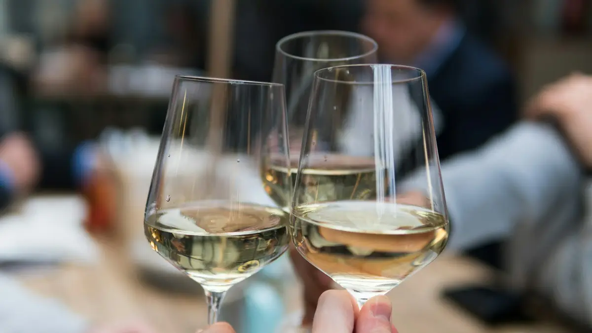

Home › Wine stories › Why We 'Drink a Toast': the Bread-in-the-Glass Origin of the Word
Why We 'Drink a Toast': the Bread-in-the-Glass Origin of the Word

Photo: Matthieu Joannon on Unsplash
Before it meant raising a glass, a toast was a slice of spiced, browned bread dropped into wine or ale. Here is how a soggy crust became the world's favourite drinking ritual.
Next time you raise a glass and say 'a toast', spare a thought for a piece of bread. The word we now use for the most sociable moment of any dinner started life in the kitchen, and for a long time it meant exactly what it means at breakfast.
The root is Latin torrere, to parch or scorch, which also gives us 'torrid'. Its past participle fed into Late Latin tostare and Old French toster, to roast or grill, and English was using 'toast' for browning something by the fire by the end of the fourteenth century.
So how did bread end up in the glass? For centuries drinkers floated a slice of browned bread, often spiced with nutmeg and sugar, in their wine or ale. It added flavour and, some say, soaked up bitterness or sediment from rough wines; nobody is entirely sure. A 1573 book by Lodowick Lloyd describes a man fishing the toast out of his cup and tossing it to his dog, and Shakespeare's Falstaff, in The Merry Wives of Windsor, calls for a toast to be put in his wine.
The leap from bread to compliment happened in fashionable London around 1700. Gentlemen began naming a celebrated beauty before drinking, and the lady herself became 'the toast', the thing that gave the wine its savour. William Congreve's play The Way of the World (1700) already jokes about a discarded toast, and Colley Cibber wrote in 1705 of a woman who was the common toast of every public table.
The best-known explanation is a legend. In June 1709 The Tatler, the London journal founded by Richard Steele, told how, in the reign of Charles II, a famous beauty was standing in the Cross Bath at Bath when an admirer scooped up a glass of her bathwater and drank her health. A merry onlooker swore he would jump in, since he did not care for the liquor but would have the toast. The magazine itself admitted it was a tale handed down by the wits, and word historians agree it is a charming story rather than the true origin. The same paper described clubs electing their toast by ballot each year and engraving her name on a glass with a diamond.
From there the meaning widened. By the mid-eighteenth century anyone or anything could be toasted, from a monarch to a victory, The Tatler had already written of 'the toast of the town', and the verb came to mean the whole ritual: a few words, glasses raised, then a drink. The bread quietly disappeared from the cup, but its name stayed behind.
To honour the original, try a warm mulled red wine with a strip of spiced, toasted brioche on the side, much as Falstaff might have liked it. For the modern ritual, though, nothing beats a glass of traditional-method sparkling wine, whether Champagne or a crisp English blanc de blancs: its fine bubbles carry the aroma of, fittingly, toasted bread, which comes from long ageing on the lees.
Related grapes and regions
Regions
Sources
- A Few Words on 'Toast' – Merriam-Webster
- Toast – Oxford University Press Blog (Anatoly Liberman)
- The toast of the town – Word Histories
- Toast – World Wide Words
- The Tatler, Volume 1 (No. 24, June 1709) – Project Gutenberg
The Wine Reference newsletter
New wines, stories and career guides, one email a week at most.
Over 18s only. Unsubscribe any time with one click. Your email is stored securely by Kit and never shared.
Support The Wine Reference
This guide is free, with no paywall. If it helped you choose a bottle, you can buy me a glass and keep it growing.
🍷 Buy me a glass